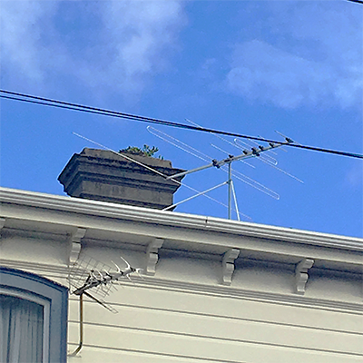

Wireless connectivity, often known as Wi-Fi, is the technology that allows a PC, laptop, mobile phone, or tablet device to connect at high speed to the internet without the need for a physical wired connection. Wi-Fi (pronounced “Why-Fy”) is a term that was coined by a branding company in 1999 as a name which would be easily recalled, due to its similarity to the then well-known term “hi-fi”. The technology uses radio signals to transmit information between your Wi-Fi enabled devices and the internet, allowing the device to receive information from the web in the same way that a radio or mobile phone receives sound.
- In-Store WiFi -
Wi-Fi in particular enhances the consumer’s ability to stay connected anytime and anywhere. With Wi-Fi, a shopper walks into the store, the point of sale expands from the register to the customer’s smartphone. As a result, the retailer can more closely and promptly engage the customer with its brand offering. Yet many retailers today are still missing out on this opportunity to increase customer engagement and conversion and thus sales, because they have yet to install or enhance Wi-Fi in their stores.
Electronic Traffic Signs
- Bus Time Board -
This makes it very easy for people to know when their bus is arriving. This is also very convenient because people can find out all the buses that arrive in an hour, so they can take the first bus going through their destination.
- Electronic Slow Down Sign -
Harding Traffics Electronic Warning Sign (EWS) sign has been designed to utilise speed detecting radar technology to improve safety for motorists approaching sections of road that pose a danger to motorists due to them lacking traction as a result of speed or where potential obstacles may cross there path. They measure the speed of the traffic, if it is too fast, it displays a 'slow down' message and the correct speed limit.
Antennas

- TV Antenna -
A television antenna, or TV aerial, is an antenna specifically designed for the reception of over-the-air broadcast television signals. Television antennas are manufactured in two different types: "indoor" antennas, to be located on top of or next to the television set, and "outdoor" antennas, mounted on a mast on top of the owner's house. They can also be mounted in a loft or attic, where the dry conditions and increased elevation are advantageous for reception and antenna longevity. Outdoor antennas are more expensive and difficult to install, but are necessary for adequate reception in fringe areas far from television stations.
- Traffic Signal Controllers -
This range of cables is generally used in permanent traffic light systems and urban traffic management systems. Traffic signalling cables provide the interconnection between traffic signal equipment and other similar applications.